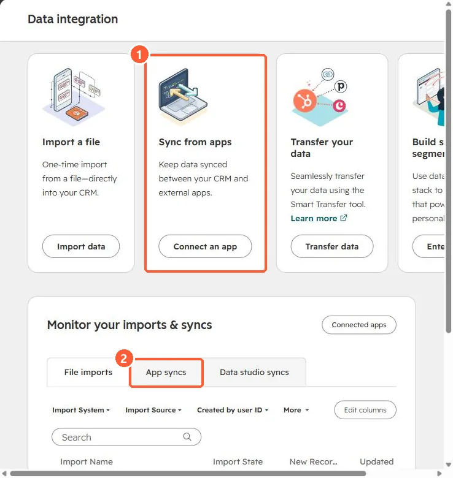

Short answer
HubSpot's KB: installing the Shopify (Data Sync) app adds the HubSpot tracking code to your store. Orders sync one way from Shopify, each linked to a cart and contact. Product variants and meta fields don't sync, and company sync needs Shopify Plus, matching on company name.
1. Data integration
Data integration in my demo portal.


2. Missing data
If a Shopify field isn't in the mappings, it won't come over. Meta fields never do.